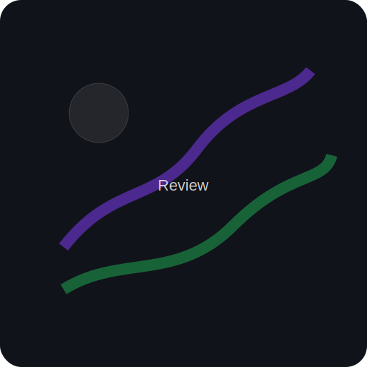

Aventura épica (simulada)
Puntuación:
Un mundo amplio, puzzles inteligentes y combate con ritmo. Ideal para fans de exploración y coleccionables.
Pros
- Diseño de niveles creativo
- Música memorable
- Gran rejugabilidad
Contras
- Curva inicial exigente
- Menús mejorables